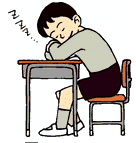
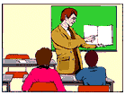

Fifth Grade |
 |
 At three o'clock in the afternoon, Mr. Forth started to give a lecture to a group of fifth-graders. There were fewer than 104 students present. There were three boys for every five girls.At 3:04 some students were asleep and some were awake. But by 3:05 one-fifth of those who had been awake had fallen asleep, and one-fourth of those who had been asleep were awake.
If there were now as many students awake as asleep, how many fifth-graders were there? How many were boys, and how many were girls?
Extra: How many students were awake and how many were asleep at 3:04 p.m.?
| Comments? Send e-mail. | Back to top | Go back to Home Page | Go back to Contents |